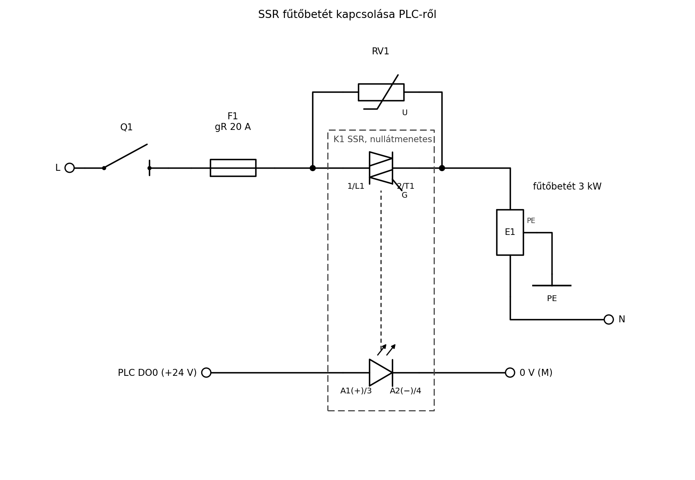

Statikus változat (mint a PDF-ben)
A villamos hajtások és fogyasztók korszerű szabályozásában nem elég a mechanikus kapcsoló vagy a hagyományos mágneskapcsoló: a motor fordulatszámát fokozatmentesen kell változtatni, a fűtést zajtalanul kell szabályozni, vagy egy lámpa fényerejét kell finoman állítani. Egy 5,5 kW-os szellőzőmotornál vagy egy 2 kW-os izzószálnál nem használhatunk egyszerű ellenállásos fokozatkapcsolót, mert az óriási hőt termel, és nem szabályozható finoman. Az erősáramú félvezetők – a tirisztor, a triac, a MOSFET és az IGBT – elektronikus kapcsolóként másodpercenként akár ezerszer vagy százezerszer is képesek ki- és bekapcsolni a terhelést, miközben a vezérlésükhöz csak nagyon kis teljesítmény szükséges. Szerelőként ezeket az elemeket nem feltétlenül forrasztjuk, hanem kész készülékekben – lágyindítóban, frekvenciaváltóban, fényerő-szabályozóban, szilárdtestrelében – találkozunk velük, és a bekötésükhöz, paraméterezésükhöz, valamint a hibakereséshez értenünk kell a működésüket.
Képzeljünk el egy hagyományos mágneskapcsolót: ha a tekercsére 24 V egyenfeszültséget adunk, a záróérintkezők mechanikusan összezáródnak, és a főáramkörben folyhat az áram. Ha a tekercs feszültségét megszüntetjük, a kapcsoló kinyit, és az áram megszakad. Az erősáramú félvezető kapcsoló ehhez hasonló, de nincs benne mozgó alkatrész: a kapcsolást a kristály belsejében lévő töltéshordozók vezérlik. A tirisztor olyan, mint egy reteszelő mágneskapcsoló, amely bekapcsolás után addig vezet, amíg a főáramkör áramát külsőleg meg nem szüntetik. A MOSFET és az IGBT ezzel szemben olyan, mint egy nagy frekvencián működő precíziós kapcsoló, amelynél a vezérlőelektródára (gate) adott feszültség határozza meg, hogy a főáramkör vezet-e.
A leggyakoribb erősáramú félvezetők működését a következő szakaszok ábrái mutatják (a tirisztor jelleggörbéje és a triacos fényerő-szabályozó rajza), katalógusadataikat a „Jelleggörbék és katalógusadatok” szakasz foglalja össze: a tirisztor és a triac hálózati frekvencián (50 Hz) kapcsol, az IGBT és a MOSFET pedig nagyfrekvenciás, impulzusszélesség-modulált (PWM) jelekkel.
A tirisztor (Silicon Controlled Rectifier, SCR) egy négyrétegű, p-n-p-n szerkezetű, három kivezetésű félvezető eszköz. Kivezetései: anód (A), katód (K) és vezérlőelektróda (gate, G). A tirisztor a hagyományos diódától abban különbözik, hogy pozitív anód-katód feszültségnél sem vezet mindaddig, amíg a gate-re pozitív gyújtóimpulzust nem adunk. A begyújtás után a tirisztor reteszelődik (bekapcsolt állapotban marad), és a gate-áram megszűnése után is addig vezet, amíg a főáram az anód és a katód között a tartóáram (holding current, ) alá nem csökken. Gyakran használt hasonlat: a tirisztor úgy viselkedik, mint egy ajtó, amelyet a gate kinyit, de amelyet csak a másik oldalról lehet bezárni – az áram megszüntetésével.
A tirisztor jelleggörbéje a következő ábrán látható: a pozitív anód-katód irányban a gate-impulzus előtt a tirisztor nagy impedanciával rendelkezik (nyitóirányú zárási, ún. előre zárási szakasz), a begyújtás után pedig a nyitóirányú karakterisztika meredeken zuhan, és nagyon kis feszültségeséssel vezet. A negatív irányban a tirisztor mindig zár, hacsak a feszültség a letörési feszültséget meg nem haladja (ezt az üzemi tartományban elkerüljük).
Az ábra sematikus (nem katalógusadat): a harmadik síknegyedben a kis záróáram az feletti letörésig; az első síknegyedben az előre zárási szakasz, amelyről a tirisztor az átbillenési feszültségnél () a vezetési ágra ugrik – nagyobb gate-áramnál már kisebb anód–katód feszültségnél. A vezetési ágon kb. 1–1,5 V esik a tirisztoron, és az áram az tartóáram alá csökkenve oltja ki. A HTML-kiadásban a gate-áram csúszkával állítható, és látszik, hogyan mozdul az átbillenési pont.
A tirisztor kioltása váltakozó áramú hálózatban a természetes kommutációval történik: amikor a feszültség félhulláma nullához közelít, a tirisztor árama a tartóáram () alá csökken, és ha a gate-re többé nem adunk impulzust a következő félhullámban, a tirisztor lezár. Egyenáramú körben a kioltáshoz külön oltókört kell alkalmazni (kényszerkommutáció), ami bonyolultabbá teszi az alkalmazást – ezért a tirisztort elsősorban hálózati frekvenciájú, váltakozó áramú áramkörökben használjuk.
Definíció. A tirisztor olyan háromkivezetésű, négyrétegű félvezető kapcsolóelem, amely pozitív anód-katód feszültségnél gate-impulzus hatására begyújtható, begyújtás után reteszelődik, és csak a főáram tartóáram alá csökkenésével oltható ki.
Szabály. A tirisztor begyújtásához a gate és a katód közé pozitív feszültségimpulzust kell adni, legalább a kapcsolási időre. A begyújtás feltétele a pozitív anód-katód feszültség és a megfelelő gate-áram.
A triac (TRIode for Alternating Current) két antipárhuzamosan kötött tirisztor egyetlen kristályban. Két főkivezetése az A1 (vagy MT1) és az A2 (vagy MT2), valamint a gate (G). A triac a váltakozó áram mindkét félhullámában képes begyújtható lenni, ezért az AC-szabályozások – például fényerő-szabályozó (dimmer), fűtésszabályozó, egyfázisú motorfordulatszám-szabályozó – leggyakoribb eleme. A triac az A2 (MT2) és a gate polaritása szerint négy kvadránsban gyújtható. A négykvadránsos típusoknál a IV. kvadráns a legkevésbé érzékeny; a háromkvadránsos (snubber nélküli) típusok a IV. kvadránsban nem gyújthatók, ezért a vezérlést az I–II–III kvadránsra tervezzük (ellenőrizendő: adatlap).
A triac alkalmazása a fázishasításos szabályozásban a legjellemzőbb. A fázishasításos fényerő-szabályozó működése: az RC-kör fáziskésleltetést hoz létre, és amikor a diac (kétirányú triggerdióda) átütési feszültségét eléri, a triac gate-jére gyújtóimpulzust ad. Az izzó fényerejét a begyújtási szög () határozza meg: minél később gyújtjuk be a triacot a félhullámban, annál kevesebb időn keresztül folyik áram, és annál kisebb az átlagos teljesítmény.
Az alábbi kapcsolási rajz egy egyszerű fázishasításos fényerő-szabályozót mutat. A potenciométer (R) és a kondenzátor (C) időállandót ad, a diac pedig a triac gate-jét vezérli.

A rajzon a triac a fázisvezetőben (L) van, az F1 biztosító és az izzó között, sorosan az izzóval; az izzó másik kivezetése a nullavezetőre (N) csatlakozik. A triac tehát nem az izzó és az N közé kerül: a kapcsolót (a szabályozó elemet) mindig a fázisvezetőbe kötjük. Az R1 potenciométer és a C1 kondenzátor soros RC-tagja a triac A2 és A1 kivezetése közé kerül; a C1 feszültsége a diacon (D1) át a triac gate-jére jut. Az R2–C2 soros tag a triacot védő snubber.
Megjegyzés. A rajzon T1 a triac, D1 a diac
(kétirányú triggerdióda), Lz a zavarszűrő tekercs, az R2–C2
soros tag pedig a kapcsolási feszültségcsúcsokat csillapító snubber.
Szabály. A fázishasításos szabályozásnál a triacot a hálózati feszültség nullátmenetéhez képest szögben (, 0°–180°) gyújtjuk. Az növelésével a kimeneten megjelenő effektív feszültség csökken. A fázishasított jelalak oszcilloszkópos felismerése (és a hálózati mérés biztonsági korlátja): Oszcilloszkóp és jelalakok.
Az alábbi ábra (a) része megmutatja, hogyan „vágja le” a triac a szinusz elejét: a gyújtóimpulzusig a teljes hálózati feszültség a triacon van, a gyújtás után a terhelésen, a nullátmenetben pedig a triac magától kiolt. A (b) rész a teljesítményt adja a gyújtásszög függvényében, a (c) a lefutó éles (MOSFET/IGBT-s) változatot, ahol a terhelés a nullátmenettől a kikapcsolásig kap feszültséget.
Ohmos terhelésnél (230 V, 1 kW-os betét) a képletből: α = 30° → 226,7 V / 971 W; 45° → 219,3 V / 909 W; 60° → 206,3 V / 804 W; 90° → 162,6 V / 500 W; 120° → 101,7 V / 196 W; 135° → 69,3 V / 91 W; 150° → 39,1 V / 29 W. A HTML-kiadásban a gyújtásszög csúszkával állítható, és választható a felfutó/lefutó éles üzemmód és a terhelés jellege.
Ellenőrző kérdések. (1) Melyik α-nál lesz 250 W az 1 kW-os betét teljesítménye? (2) Miért 50 % a teljesítmény α = 90°-nál, ha az effektív feszültség „csak” 70,7 %?
Válaszok: (1) a (b) görbéről vagy a képlet numerikus megoldásával: (pontosabban 113,8°). (2) Ohmos terhelésnél , tehát – a két szám nem mond ellent egymásnak.
Definíció. A felfutó éles (fázishasításos) dimmer a félhullám elejét vágja le, jellemzően triakos; induktív (vasmagos transzformátor) és ohmos terheléshez való, jelölése gyakran R, L. A lefutó éles (fázislevágásos) dimmer a félhullám végét vágja le MOSFET vagy IGBT kapcsolóval; kapacitív bemenetű elektronikus transzformátorhoz és a legtöbb LED-meghajtóhoz való (R, C). Az univerzális dimmer a terhelés jellegét felismeri (ellenőrizendő: gyártói jelölésrendszer). A kétféle jelalak a fenti szimulátorban váltható; a bekötést és a kiválasztást a Kapcsolók, dugaszoló aljzatok és szerelvények alfejezet „Fényerő-szabályozó bekötése és kiválasztása” pontja mutatja.
LED-kompatibilitás. Csak „dimmelhető” jelölésű fényforrás vagy meghajtó szabályozható. A dimmer LED-terhelhetősége jellemzően a megadott izzólámpás teljesítmény töredéke; a pontos értéket és a darabszámot a gyártói kompatibilitási lista adja (ellenőrizendő). A minimális terhelés alatt (kevés LED) a dimmer nem működik stabilan.
| Hibajelenség | Valószínű ok | Teendő |
|---|---|---|
| Villogás, ugrálás alacsony állásban | minimális terhelés alatt; nem kompatibilis meghajtó; rossz üzemmód | listázott fényforrás és dimmer, lefutó él, alapterhelő |
| Zümmögés | felfutó él kapacitív terhelésen | lefutó éles dimmer |
| Derengés kikapcsolva | kétvezetékes dimmer saját árama vagy világító kapcsoló árama a meghajtón át; a kapcsolt fázissal párhuzamos hosszú vezeték kapacitív csatolása | N-es (háromvezetékes) dimmer, a gyártó alapterhelő (bypass) modulja, jelzőfény nélküli kapcsoló (ellenőrizendő: gyártói ajánlás) |
| Nem halványodik eléggé | a minimális fényerő beállítása, a meghajtó alsó határa | a dimmer alsó határának beállítása, más meghajtó |
Nagy, több helyiséges rendszerben a fázishasítás helyett külön vezérlőjel (DALI vagy 1–10 V) a jobb megoldás: KNX, DALI és más épületautomatikai rendszerek.
Valós eset (szemléltető). Felújításkor az izzókat LED-re cserélték, a régi triakos dimmerrel a lámpák villogtak. Az adattábla és a terhelés összevetése: felfutó éles dimmer, a LED-ek összteljesítménye a minimális terhelés alatt. Javítás (feszültségmentesítés után): LED-kompatibilis, lefutó éles, N-vezetős dimmer; próba a teljes szabályozási tartományban.
Ellenőrző kérdések. (1) Miért villoghat egy dimmer, ha a lámpák száma kevés? (2) Melyik két megoldás szünteti meg leggyakrabban a kikapcsolt LED derengését? Válaszok: (1) a terhelés a minimális alatt marad, a dimmer elektronikája nem működik stabilan; (2) N-es dimmer, illetve alapterhelő modul (vagy a jelzőfényes kapcsoló cseréje).
A MOSFET (Metal-Oxide-Semiconductor Field-Effect Transistor) olyan feszültségvezérelt, unipoláris tranzisztor, amelynél a gate és a source közé adott feszültség () nyitja vagy zárja a csatornát a drain és a source között. Mivel a gate szinte ideális szigetelő, a MOSFET gate-árama közel nulla, a kapcsolási sebessége pedig nagyon nagy – akár több százezer kapcsolás másodpercenként. Az erősáramú MOSFET-eknek azonban a nagy feszültségeknél viszonylag nagy a bekapcsolási (csatorna) ellenállása, ami nagy áramoknál jelentős vezetési veszteséget okoz.
Az IGBT (Insulated Gate Bipolar Transistor) egy hibrid elem: a vezérlése a MOSFET-hez hasonlóan feszültségvezérelt (gate-emitter, ), a kimeneti része viszont bipoláris tranzisztorhoz hasonló kollektor-emitter áramúttal dolgozik. Az IGBT a MOSFET-hez képest nagyobb feszültségen és nagyobb áramon kapcsolható, és a vezetési feszültségesése telítéskor () kisebb, viszont lassabb, mint a MOSFET. Ezért az IGBT a mai frekvenciaváltók, szünetmentes tápegységek és ipari inverterek alapvető kapcsolóeleme, a MOSFET pedig a gyors, kis és közepes teljesítményű tápegységekben, DC-DC átalakítókban és egyenáramú motorvezérlőkben gyakori.
Definíció. A MOSFET feszültségvezérelt, unipoláris félvezető kapcsoló, ahol a gate–source feszültség határozza meg a drain–source csatorna vezetését. Az IGBT feszültségvezérelt, bipoláris teljesítmény-félvezető, amely a MOSFET gyors vezérlését és a bipoláris tranzisztor nagy áramú kimenetét egyesíti.
A frekvenciaváltó teljesítményköre. A könyv sok helyen hivatkozik a frekvenciaváltó belsejére (közbenső kör, fékellenállás, kisülési idő, „OV” hiba). Az alábbi rajz egy lapon mutatja a teljes teljesítménykört; kövesd balról jobbra az energia útját a hálózattól a motorig.
![Bal oldalt az L1, L2, L3 bemenet hat diódából álló hídra fut, amely a DC+ és DC− sínt táplálja. A DC+ sínben R1 ellenállás, vele párhuzamosan K1 záró érintkező. Utána a két sín között C1 kondenzátor, majd R_f fékellenállás és V7 IGBT sorosan. Jobbra három fázisláb, mindegyikben két IGBT antiparallel diódával (T1–T4, T3–T6, T5–T2), a lábak középpontja az U, V, W kimenet az M1 motorhoz. Lent a vezérlőegység szaggatott kerete. Az alsó diagramon szaggatott szinusz-referencia, szürke háromszög-vivő, téglalap impulzussor és vastag, hullámos szinuszos motoráram.](figures/img/ve137-6.png)
A hálózati oldalon a B6 diódahíd (lásd Egyenirányítók, szűrők, stabilizátorok, kapcsolóüzemű táp és PFC) egyenirányít. Bekapcsoláskor a C1 kondenzátortelep az R1 előtöltő ellenálláson át töltődik, majd K1 áthidalja R1-et – ezért nem old ki a bemeneti kismegszakító a töltőáramtól (egyes típusoknál NTC vagy tirisztoros híd végzi ugyanezt). A közbenső kör feszültsége terhelve , üresjárásban . Az inverterhíd egy-egy fázislábának két IGBT-je felváltva kapcsol; a kitöltési tényezőt a szinusz-referencia vezérli (PWM), és a motor induktivitása az impulzussorból hullámos szinuszáramot formál. Fékezéskor a motor visszatáplál, nő: a fékchopper (V7) ilyenkor az R_f fékellenállásra kapcsol; ha nincs fékellenállás, a váltó „OV” (túlfeszültség) hibával áll le (lásd Frekvenciaváltó és lágyindító paraméterezése). Kikapcsolás után C1 csak lassan sül ki, ezért a burkolaton feltüntetett kisülési idő előtt a DC-kapcsokhoz nyúlni tilos. A váltó elosztóba építéséről a Motorvédelmek, lágyindítók és frekvenciaváltók az elosztóban alfejezet szól. A HTML-kiadásban az ábra öt lépésben (bekapcsolás, üzem, PWM, fékezés, kikapcsolás) kiemeli az éppen működő részt.
Kérdés az ábrához: melyik két elem nem lehet egyszerre bekapcsolva egy fázislábon belül, és mi történne, ha mégis? (T1 és T4 – egyszerre vezetve rövidre zárnák a közbenső kört: „hídzárlat”.)
A szerelő ezekkel az elemekkel különböző kivitelben találkozik. Az alábbi ábrán (a) egy TO-220 tokos tirisztor vagy triak látható: fém hűtőfül furattal (1) és három láb (2) – tirisztornál A, K, G, triaknál A1, A2, G, a sorrend az adatlap tokrajza szerint. A (b) csavaros tirisztor hatlapú menetes talpa (3) a hűtőbordába csavarva egyben főkapocs is, a fonott főkivezetés (4) kábelsaruval csatlakozik, a vékony vezetékek (5) a gate és a segédkatód. A (c) IGBT-modul (félhíd) rézalaplapja (6) szerelőfuratokkal kerül a hűtőbordára; a főáram a csavaros főkapcsokon (7), a vezérlés a vékony csapokon (8) halad, egyes modulokban hőmérséklet-érzékelő (NTC) is van (9).

A legfontosabb szerelési tanulság: a fém fül és a menetes talp általában valamelyik főkapoccsal azonos potenciálon van, ezért a hűtőborda feszültség alá kerülhet – ezt az adatlapból kell ellenőrizni (létezik szigetelt fülű és szigetelt alaplapú kivitel is). A vezérlőcsapokat (gate) ne érintsd feleslegesen, a statikus feltöltődés károsíthatja őket. A HTML-kiadásban az a–c gombbal egy-egy kivitel emelhető ki.
Az erősáramú félvezetők katalógusadatai a munkapont és a biztonságos üzem meghatározásához szükségesek. A főbb paraméterek:
Szabály. A katalógusadatokat mindig az aktuális gyártói adatlapokból kell kiolvasni, és a tervezésnél a legrosszabb üzemállapotra (maximális feszültség, maximális áram, maximális melegedés) kell méretezni. A határértékek túllépése a félvezető azonnali tönkremeneteléhez vezet.
A félvezető kapcsolóban kétféle veszteség keletkezik:
A teljes veszteség: . Az elem hatásos hűtését hűtőbordával és gyakran ventilátorral kell biztosítani. A hűtőborda méretezése a félvezető megengedett maximális réteghőmérséklete (jellemzően 150 °C a szilíciumnál, ellenőrizendő) és a környezeti hőmérséklet alapján történik. A gyakorlatban a hűtőborda méretét a gyártói diagramokból választjuk ki.
Szabály. Minden erősáramú félvezetőt a katalógusban megadott hőellenállás és maximális réteghőmérséklet figyelembevételével kell hűteni. A hűtőborda és a félvezető közé hővezető pasztát vagy szigetelő fóliát kell tenni, és a rögzítőcsavarokat az előírt nyomatékkal kell meghúzni. Ha a tok fém füle feszültség alatt van, és a borda más potenciálon (pl. földelt) van, a fém fület szigetelő lappal és szigetelő hüvellyel kell elválasztani; a szigetelő lap mellé – típusától függően – vékony pasztaréteg is kerülhet (gyártói adat szerint).
Az alábbi ábra (a) része egy TO-220 tokos félvezető szigetelt szerelését mutatja robbantva, a csavar tengelye mentén: 1 csavar, 2 alátét, 3 vállas szigetelő hüvely, 4 a félvezető fém füle, 5 szigetelő lap pasztával, 6 hűtőborda, 7 alátét és rugós alátét, 8 anya. Az alsó metszetek a helyes és a hibás szerelést vetik össze, a (c) rész pedig az ellenőrzést.

Paszta nélkül a felületek közti mikroszkopikus légrés nagy hőellenállást okoz, a túl vastag réteg pedig maga is rontja a hőátadást. A leggyakoribb súlyos hiba a hiányzó szigetelő hüvely: a csavar fémesen összeköti a fület a bordával, így a borda feszültség alá kerül. Ezért beépítés előtt, feszültségmentesen ohmmérővel ellenőrizd, hogy a fül és a borda között szakadás (OL) van. A HTML-kiadásban a helyes és a hibás metszetek egyenként léptethetők.
A szilárdtestrelé (SSR) egy tokban egyesíti az optocsatolós vezérlőoldalt és a triacos (vagy antiparallel tirisztoros) kimenetet. Fűtésvezérléshez, kemencékhez gyakran kerül PLC-kimenetre. Az alábbi rajzon kövesd külön a vezérlőkört (alul, 24 V DC) és a teljesítménykört (felül, 230 V AC), és nézd meg, mi köti össze a kettőt.

Típusválasztás. A nullátmenetes SSR a hálózati feszültség nullátmenetében kapcsol be: ohmos terheléshez (fűtés) ideális, kevés zavart okoz. A véletlen (random) kapcsolású SSR azonnal kapcsol: induktív terheléshez és fázishasításhoz való. A vezérlőoldal jellemzően 3–32 V DC, a vezérlőáram 5–15 mA (optocsatoló, lásd Hő-, fény- és feszültségfüggő elemek és érzékelők). A kikapcsolt SSR nem leválasztás (lásd Mágneskapcsolók és relék és a 6. feladatot): ezért kell elé a Q1 leválasztó.
Számítás. 3 kW-os, 230 V-os fűtőbetét SSR-rel.
Rövidzárvédelem. A triac túlterhelhetőségét az -értéke adja. A kismegszakító zárlatkor általában nem elég gyors a félvezető védelméhez, ezért a gyártó gR/aR félvezetővédő biztosítót ír elő, amelynek -je kisebb az SSR-énél (ellenőrizendő: az SSR és a biztosító adatlapja). Az F1 a rajzon ezért nem kismegszakító.
Ellenőrzés üzembe helyezéskor. Vezérlés nélkül a terhelésen a szivárgóáram miatt feszültség mérhető (nagy belső ellenállású műszerrel akár a hálózati feszültség közelében) – ez nem hiba, de nem is leválasztás. Vezérléssel az SSR kimenetén kb. 1–1,5 V esik.
Tipikus hibák. SSR hűtőborda nélkül (néhány perc alatt túlmelegszik); induktív terheléshez nullátmenetes SSR; zárlatos SSR, amely miatt a fűtés nem kapcsol ki – ezért a túlmelegedés ellen független, mechanikus kapcsolású hőkorlátozó (biztonsági termosztát) kell (ellenőrizendő: termékszabvány).
Definíció. Hullámcsomag- (ciklus-) szabályozásnál a terhelés egész számú hálózati periódusig teljes feszültséget kap, majd egész periódusig semmit: . Nullátmenetes SSR-rel valósítjuk meg; a fűtésszabályozás jellemző módja.
Szabvány. A félvezetők katalógusadatai és vizsgálati módszerei a nemzetközi IEC (MSZ EN) 60747 sorozatba tartoznak, amely a félvezető eszközök általános követelményeit rögzíti (ellenőrizendő: pontos szám és hatályos kiadás). A frekvenciaváltókra a termékszabvány az MSZ EN 61800 sorozat (villamos biztonság: -5-1, EMC: -3), a lágyindítókra és félvezetős kontaktorokra (SSR) az MSZ EN 60947-4-2, illetve -4-3; a gépek villamos berendezéseire az MSZ EN 60204-1 vonatkozik. A felharmonikus-kibocsátás határértékei: MSZ EN 61000-3-2 (legfeljebb 16 A fázisáramú készülékek) és MSZ EN 61000-3-12 (16 A felett, 75 A-ig) (ellenőrizendő: aktuális szabványkiadás és alkalmazási tartomány).
Eset. Egy 7,5 kW-os háromfázisú szellőzőmotor közvetlen indításakor a védőkapcsoló időnként leoldott, és a mechanikus hajtás kardáncsuklója erősen kopott. A karbantartó villanyszerelő a direktkapcsolást egy háromfázisú lágyindítóra cserélte. A lágyindító minden fázisban két antipárhuzamos tirisztort tartalmazott, így a motor feszültségét a begyújtási szög fokozatos csökkentésével 0-ról a névleges értékre emelte. Az indítási áramlökés körülbelül a felére csökkent, a mechanikai rántás megszűnt, a hálózati feszültségletörés indításkor kisebb lett. Felfutás után az áthidaló mágneskapcsoló zár, a motor üzemi fogyasztása nem változott (a lágyindító nem energiatakarékossági eszköz, csak az indítást szelídíti). A szerelőnek a bekötés során figyelnie kellett a tirisztoros modul hűtőbordájára, a gyártó által előírt kábelezésre, valamint arra, hogy a vezérlőjelet vivő törpefeszültségű (például 24 V-os) jelkábelt ne vezesse a motor tápkábelével azonos kötegben, mert a felharmonikusok zavart okozhatnak a vezérlésben.
Tanulság. Az erősáramú félvezetős készülékek beüzemelésekor a készülék kapcsolási rajzát, a gyártói táp- és vezérlőkábel-ajánlást, valamint a szellőzést, hűtést mindig ellenőrizni kell, mert a tirisztoros/IGBT-s teljesítményfokozat melegedése és az elektromágneses zavarás sokkal jelentősebb, mint egy mágneskapcsolónál.
Cél. Feszültségmentesen eldönteni, zárlatos-e egy frekvenciaváltó, lágyindító vagy félvezetős kapcsoló teljesítményfokozata, mielőtt újra feszültség alá kerül.
Biztonsági korlát. A mérést jogosult személy végzi; a tanuló leválasztott, oktató által átvett alkatrészen, műhelyben gyakorol. Az öt biztonsági szabály: (1) lekapcsolás, (2) visszakapcsolás elleni biztosítás, (3) feszültségmentesség ellenőrzése, (4) földelés és rövidre zárás ha szükséges, (5) a szomszédos feszültség alatti részek lefedése. Frekvenciaváltónál várd ki a feltüntetett kisülési időt, és mérd meg a DC+ és DC− közötti feszültséget: 50 V DC alá csökkenése előtt nem nyúlunk a kapcsokhoz (ellenőrizendő: gyártói kézikönyv). A táp- és a motorkábelt kösd le.
Mérés diódaállásban (a DC kapcsok hozzáférhetősége és az előtöltő ellenállás helye típusfüggő; ellenőrizendő: gyártói szervizleírás):
| Fokozat | Piros zsinór | Fekete zsinór | Várt érték |
|---|---|---|---|
| bemeneti híd, felső diódák | L1, L2, L3 | DC+ | 0,3–0,6 V; fordítva OL |
| bemeneti híd, alsó diódák | DC− | L1, L2, L3 | 0,3–0,6 V; fordítva OL |
| kimenet, felső antiparallel diódák | U, V, W | DC+ | 0,3–0,6 V; fordítva OL |
| kimenet, alsó antiparallel diódák | DC− | U, V, W | 0,3–0,6 V; fordítva OL |
Ha bármelyik pár mindkét irányban kb. 0 V, az elem zárlatos: feszültség alá helyezni tilos, szervizbe kell adni. A DC+ és DC− közötti mérésnél a kijelzett érték lassan nő, mert a műszer a kondenzátort tölti; ez nem hiba. Ha a diódaút előtöltő ellenálláson át vezet, vagy a relé nyitott, a leolvasás eltérhet.
Önálló alkatrészen (ellenőrizendő: adatlap):
| Alkatrész | Mérés | Várt érték |
|---|---|---|
| tirisztor | A–K mindkét irányban | OL |
| tirisztor | G–K | néhány tíz–száz Ω, mindkét irányban hasonló |
| triak | A1–A2 mindkét irányban | OL |
| IGBT-modul, kisütött gate | C–E | egyik irányban 0,3–0,6 V (dióda), a másikban OL |
Kidolgozott hibaeset.
Gyakorlás: ennek az alfejezetnek a kidolgozott példái, gyakorlatai és megoldással ellátott feladatai az Összefoglaló feladatgyűjtemény villanyszerelő tanulóknak című kötet 37.4 szakaszában találhatók.
Az erősáramú félvezetők – a tirisztor, a triac, a MOSFET és az IGBT – a modern villamos hajtások és teljesítményszabályozók kapcsolóelemei. A tirisztor négyrétegű, reteszelő elem, amely pozitív anód-katód feszültségnél gate-impulzussal gyújtható, és a főáram tartóáram alá csökkenésével oltható ki. A triac két antipárhuzamos tirisztor egyetlen tokozásban, ezért a váltakozó áram mindkét félhullámában vezet. A fázishasításos szabályozás során a begyújtási szög () határozza meg a kimeneti effektív feszültséget; a fényerő-szabályozók és fűtésszabályozók alapelve ez. A MOSFET és az IGBT feszültségvezérelt, nagyfrekvenciás kapcsolók. A MOSFET gyors, kis ellenállású elem, az IGBT pedig nagy feszültségre és nagy áramra tervezett, a MOSFET vezérlését és a bipoláris tranzisztor kimenetét ötvözi. A kapcsolási veszteség a frekvenciával arányos, ezért a nagyfrekvenciás inverterek hűtése kritikus. A katalógusadatok – , , , , – a munkapont és a biztonságos üzem meghatározásához szükségesek. Ezt a tudást a következő, Egyenirányítók, szűrők, stabilizátorok, kapcsolóüzemű táp és PFC című alfejezetben használjuk fel, ahol a tápegységekben működő félvezető kapcsolásokat vizsgáljuk meg.
Továbbvitt eredmény. A tirisztor és a dióda működésének ismerete (begyújtás, tartóáram, kioltás) alapozza meg az Egyenirányítók, szűrők, stabilizátorok, kapcsolóüzemű táp és PFC alfejezetben az egyenirányító hidak és a kapcsolóüzemű tápegységek működésének megértését.